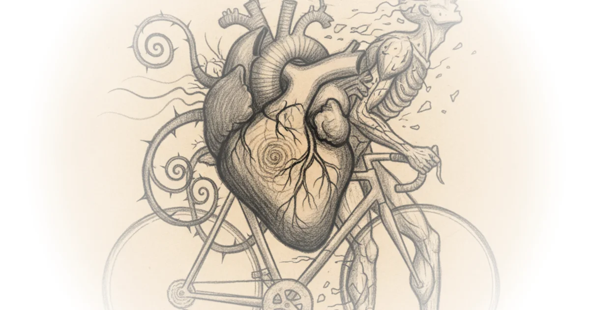
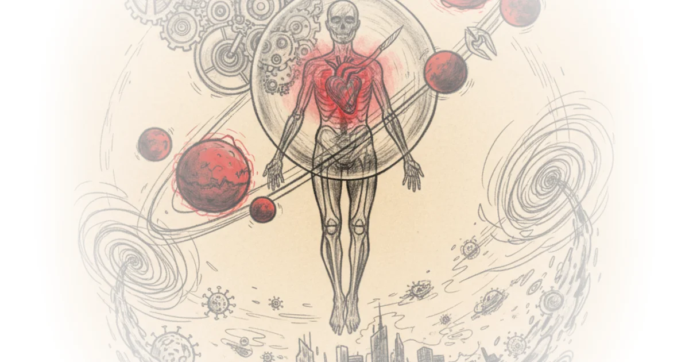

Why do people keep falling for things that don't work? The mechanistic bias Rohin Francis · Medlife Crisis ·Dec 20, 2022 · 45 min read · Public Health
How kurzgesagt cooks propaganda for billionaires The Hated One · The Hated One ·Dec 8, 2022 · 21 min read · Public Health
Unhelpful doctor answers your questions for 54 straight minutes Rohin Francis · Medlife Crisis ·Sep 17, 2022 · 48 min read · Public Health
Can you be so fit...that you die early? Rohin Francis · Medlife Crisis ·Aug 22, 2022 · 19 min read · Public Health 
How big boobs changed medicine forever Rohin Francis · Medlife Crisis ·Jul 21, 2022 · 13 min read · Public Health
The cult of superstar doctors Rohin Francis · Medlife Crisis ·May 12, 2022 · 23 min read · Public Health
When doctor influencers get mixed up with nfts Rohin Francis · Medlife Crisis ·Apr 17, 2022 · 10 min read · Public Health
The problem with silicon valley medicine Rohin Francis · Medlife Crisis ·Apr 13, 2022 · 21 min read · Public Health
#TyskySour: Restrictions over; queen gets covid; trojan horse hoax; epstein associate suicide Novara Media · Novara Media ·Feb 21, 2022 · 73 min read · Public Health
Doing real science (and breakdancing) in zero gravity Rohin Francis · Medlife Crisis ·Feb 1, 2022 · 14 min read · Public Health
A student drank 2l of energy drink a day. This is what happened to his heart Rohin Francis · Medlife Crisis ·Sep 13, 2021 · 12 min read · Public Health
What really happens when you exercise (basically magic) 🏃♀️🤸🏿♂️ Rohin Francis · Medlife Crisis ·Aug 24, 2021 · 15 min read · Public Health
A history of the heart in 4 chapters Rohin Francis · Medlife Crisis ·Jul 25, 2021 · 46 min read · Public Health
How space doctors train like an astronaut on earth Rohin Francis · Medlife Crisis ·Jul 23, 2021 · 26 min read · Public Health
Injecting cocaine into your spine Rohin Francis · Medlife Crisis ·Jun 25, 2021 · 12 min read · Public Health
Lawyer & doctor react to grey's anatomy malpractice Ft. Doctor mike Devin Stone · LegalEagle ·May 2, 2021 · 21 min read · Public Health
How to do surgery on mars Rohin Francis · Medlife Crisis ·Apr 15, 2021 · 19 min read · Public Health 